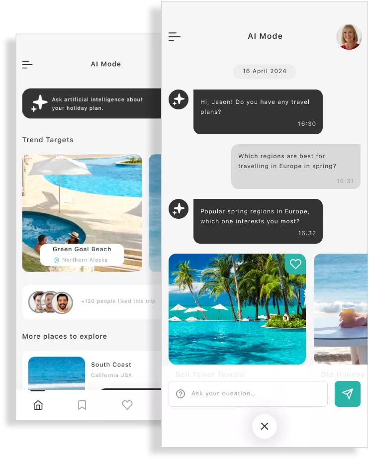

AI Chatbot Development Services
Build Smarter Customer Experiences
AI chatbot development services involve designing, building, and deploying conversational AI systems that can understand user intent, respond in natural language, and automate business workflows.
Book a Free ConsultationWhy Choose Us?
CloudConverge builds custom AI chatbots powered by NLP, large language models (LLMs), and retrieval-augmented generation (RAG) - enabling businesses to resolve over 80% of routine customer queries without human intervention, 24 hours a day. Our chatbots integrate with your CRM, ERP, and third-party platforms, giving customers instant, accurate answers while freeing your support team for high-value interactions. Whether you need a customer support bot, a lead qualification assistant, or an internal HR helpdesk - we build it end-to-end: from conversational design and AI model fine-tuning to deployment, monitoring, and continuous improvement.
As one of the leading business AI chatbot development service provider, we create chatbots to solve the world's real issues. With each state-of-the-art AI to natural language and zero-friction integration, all our solutions include it. Our chatbots are intended to talk on your behalf, make you more efficient, and scale with your business.
Free Consultation
Contact Us
Our AI Chatbot Development Services
We provide turnkey AI chatbot development for Australian, US, UK, and Middle East businesses. Our products are designed to suit your business goal, customers, and industry.
Custom AI Chatbot Development
Our tailor-made AI chatbot solutions are an extension of your voice and flow so conversation feels natural and organic to your consumers.
Voice-enabled Chatbots
Our voice bots are built to deliver natural hands-free experiences across any platform. All of our bots are thoroughly tested for reliability and quality.
Maintenance & Support
Launch is only the start for our AI chatbot solutions. We provide regular updates, monitoring, and optimization to make your chatbot future-proof and secure.
Multilingual Bots
As the world's most advanced AI chatbot developer, we build multilingual chatbots that communicate with your customers in their language-so that you can expand across the globe.
Chatbot Integration with CRM/Apps
We integrate business apps and CRMs with chatbots and automate and intelligently make your systems.
Project Done
Clients Satisfied
Team Members

Industries We Serve
Our tech-friendly chatbot development company builds solutions with measurable returns.
SaaS & Technology
We help software companies deliver live support, reduce ticket volume, and simplify onboarding using AI-driven chatbots.
E-commerce & Retail
Our chatbots engage with customers, suggest, and alert on orders-fueling conversions and loyalty.
Healthcare
We build secure, regulation-compliant chatbots that deal with patient FAQs, appointment booking, and assistance, freeing admin time and improving care.
Education
Our bots deliver live student support, automated enrollment, and facilitate personalized digital learning experiences.
Finance & Banking
We build AI chatbots responding to account queries, transactions, and fraud notifications to compliance and data protection.
Our Process
We are the world's leading AI chatbot builder and possess a tested, proven process of bot development that propels your business objectives.
Discovery
We learn about your business, objectives, and customers to define your mandate for chatbots.
Strategy
Our experts craft conversation flows, voice, and integrations according to your requirements.
Development
We build safe, scalable AI chatbots with the best frameworks for long-term use.
Integration
We integrate your chatbot with CRMs, ERPs, and workflow automation software.
Testing
We thoroughly test all of our chatbots on performance, accuracy, and customer satisfaction.
Ongoing Support
We update your chatbot to keep growing, getting better, and adapting along with your business.
Client Reviews of Some of Our Work
FAQ's
Generally, our 6–10 week dependent AI chatbot projects depend upon the level of complexity and integration required.
Yes. We are professional chatbot integrators of CRMs, ERPs, and business applications for exchanging data.
Yes. As one of the top-rated AI chatbot development company in the world, we design bots that speak any language so that we are capable of serving customers worldwide.
We provide USA, UK, Middle East, and Australia AI chatbot development services to business companies in various sectors.
Yes. Our organization provides monitoring, maintenance, and updation so that your chatbot remains updated with your company.